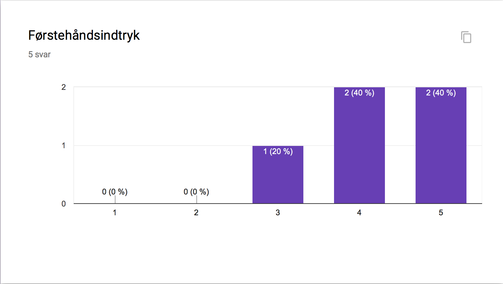
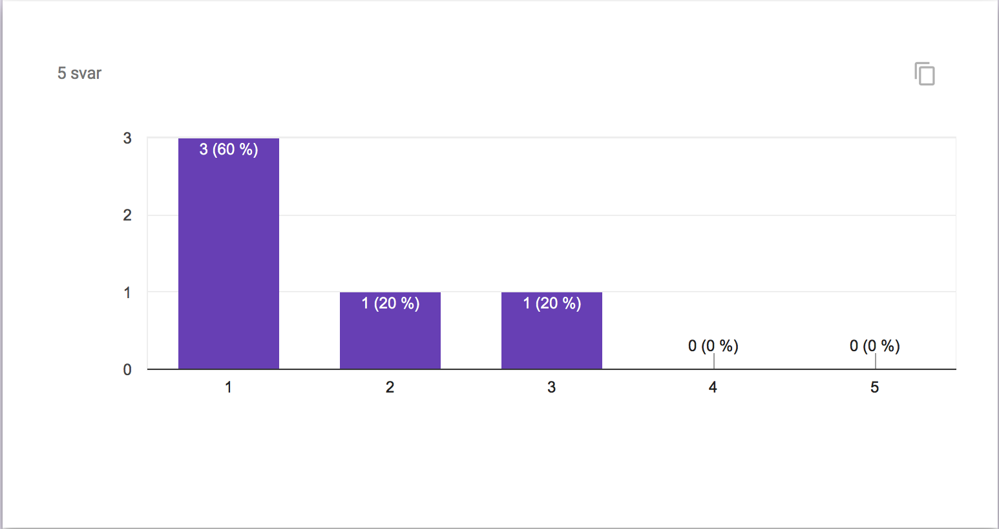
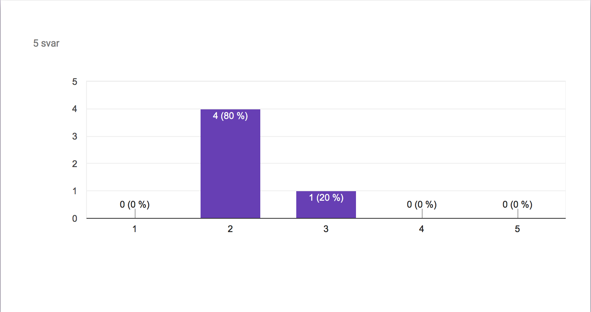
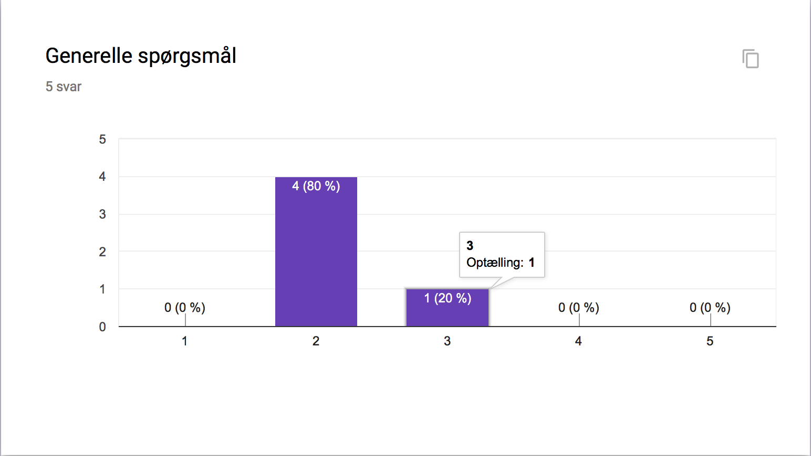
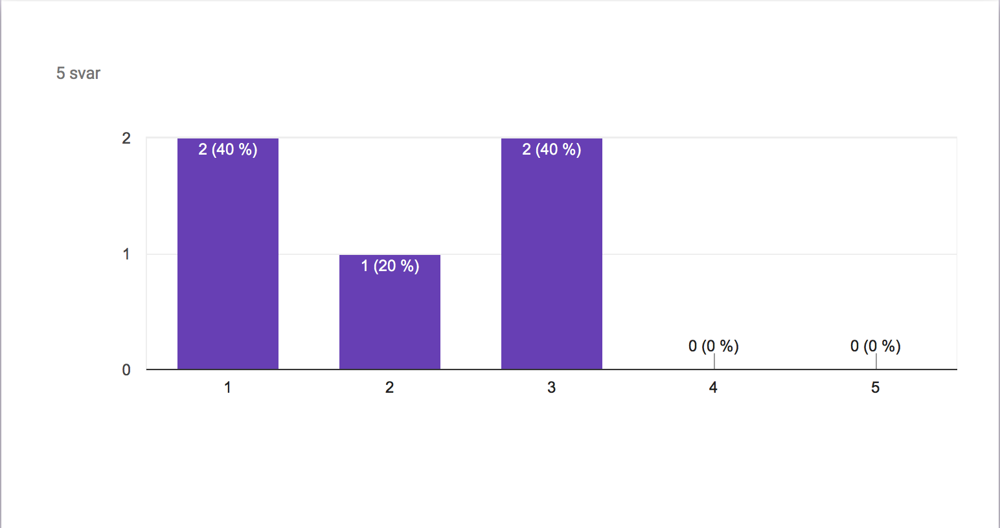
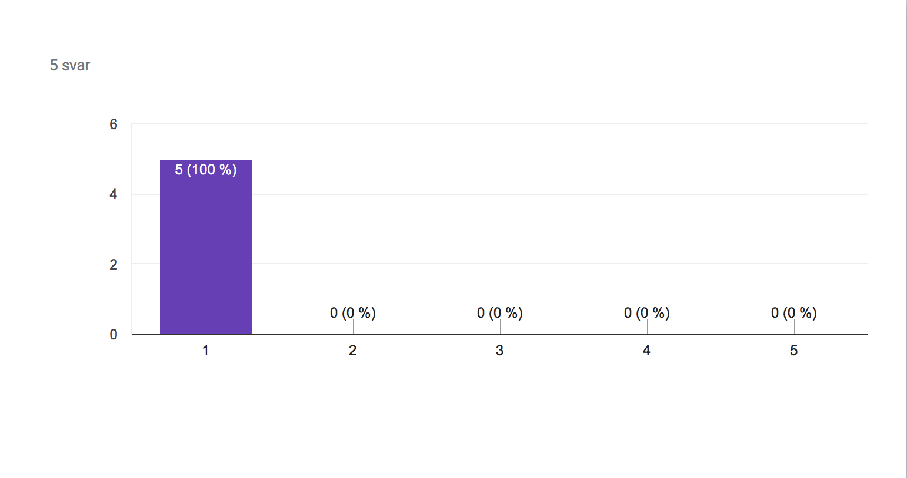

Vi fik Timmi til at teste vores prototype, og han sagde følgende:
Vi fik David til at teste appen, som vi optog en video af.
Den kan ses herunder:
Rodet - Overskuelig
Flot design - Grimt design
Interessant - Uinteressant
Brugervenlig - Ikke-brugervenlig
Informerende - Ikke-informerende
Professionel - Uprofessionel
Klart koncept - Uklart koncept
